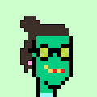
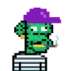
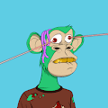
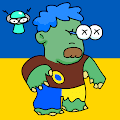
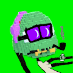
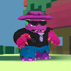
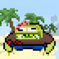
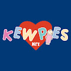
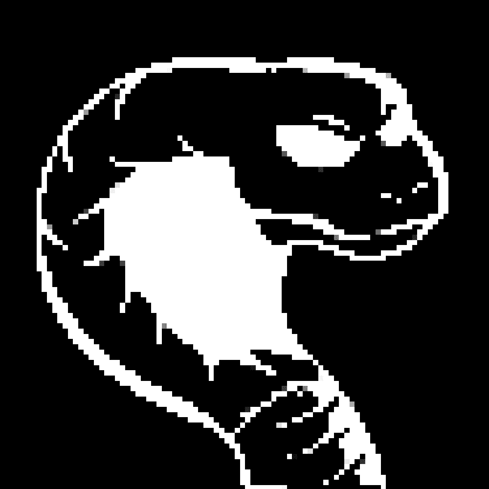
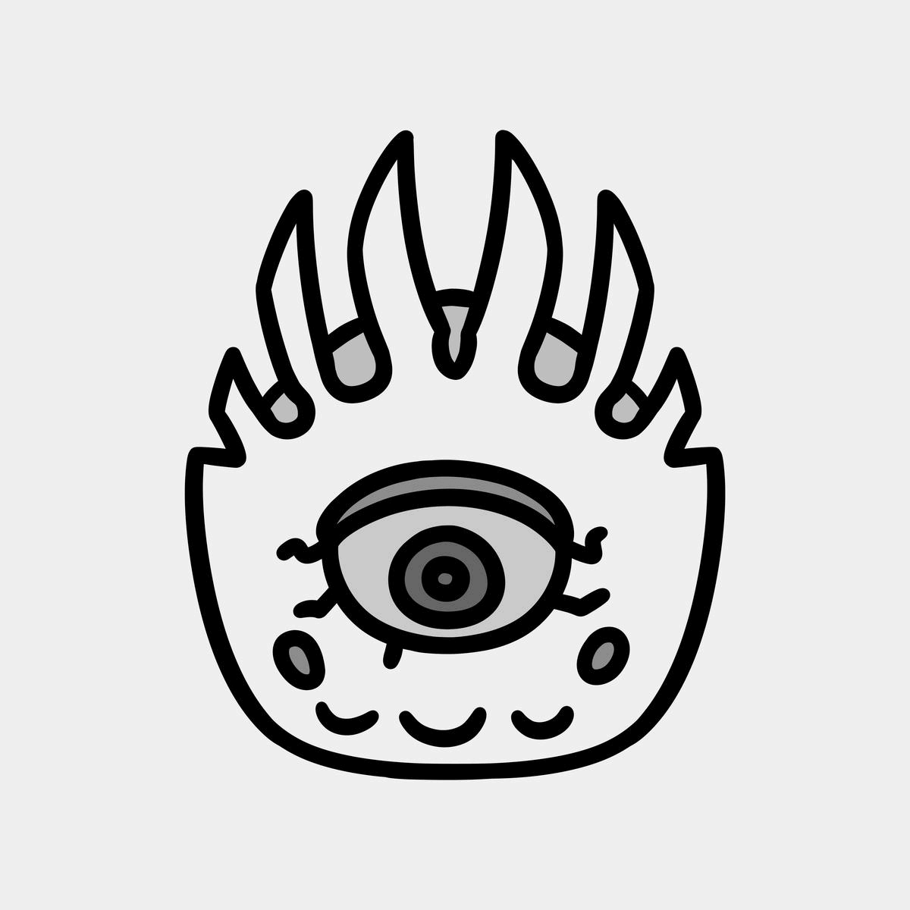

KareQN WhiteList NFT KareQN 白名单 NFT NFT - 常见问题（FAQ） ▶ 什么是 KareQN 白名单 NFT？ KareQN WhiteList NFT 是一个 NFT（Non-fungible token）集合。存储在区块链上的数字艺
KareQN! with all my heart 卡瑞QN！全心全意 NFT - 常见问题（FAQ） ▶ 什么是 KareQN！一心一意？ 卡瑞QN！我全心全意地收藏一个 NFT（不可替代令牌）。存储在区块链上
Karin's Art Collection 卡林斯艺术收藏 完全原创的艺术收藏品，自由表达卡琳的艺术。 我的目标是创作不受任何事物约束的免费艺术品，例如活跃在 Web 3.0 中的艺术家。 我们的目标是通
Karma.wav Karma.wav 统计 创建于 6 个月前 60 代币供应 10% 费用 过去 7 天内没有出售任何 Karma.wav。过去 30 天最畅销的 Karma.wav NFT 由 Karma.wav 在 Sound 上创建。在https://soun
Karory Collaboration Girls Karory Collaboration Girls NFT - 常见问题（FAQ） ▶ 什么是 Karory Collaboration Girls？ Karory Collaboration Girls 是一个 NFT（非同质代币）系列。存储在区块链上的数字艺术品集合。 ▶ 有多少 Karory Collaboration Girls 代币
KARTAL CLUB KARTAL CLUB NFT - 常见问题（FAQ） ▶ 什么是 KARTAL 俱乐部？ KARTAL CLUB 是一个 NFT（Non-fungible token）集合。存储在区块链上的数字艺术品集合。 ▶ 有
Kat Nolte 过去 7 天没有售出 Kat Nolte。 数字油画 - 写实肖像 Kat Nolte NFT - 常见问题（FAQ） ▶ 什么是 Kat Nolte？ Kat Nolte 是一个 NFT（非同质代币）集合。存储在区
Katana N Samurai 🎴 Katana N' Samurai 是生活在区块链中的 10,000 个独特的数字武士的集合。🎴 💮💮💮 不是2021，是1700。💮💮💮 🏮🏮🏮 我们要记录区块链世界的历史。🏮🏮🏮 🏮 我们正
Kate the Cursed 13 Editions Katherina “Kate the Cursed” Jesek（生于 1999 年）是一位来自纽约市郊区的多媒体数字艺术家和跨性别活动家。她的作品专注于真实的、过时的显示技术
Kathie Lee Gifford Kathie Lee Gifford 系列通过纽约市造福儿童协会以及The Rock、The Road 和 Rabbi Foundation向 Kathie 心爱的粉丝和她的慈善使命致敬。 由 Kathie 手工制作的 500 Pioneer Stars 的
KatMonstarz Katmonstarz 是一个社区驱动的收藏品项目，收藏规模为 2,500 个，每个 Katmonstarz 允许其所有者投票、获得 nft 掉落和收入。加入 Kat 包。 很久以前，猫和星星在以太坊上和睦相处。 发生
Kawaii Club Cuties Kawaii Club 是以太坊区块链上最可爱的 10,101 名女孩！随机生成且完全独特，Cuties 与 Kaycee 一起进行有趣的冒险。Cutie 持有者可以沉浸在 Kaycee 的生活中，还可以独
Kawaii Girls & Animals Collection Collectibles Kawaii Girls & Animals Collection Collectibles NFT - 常见问题（FAQ） ▶ 什么是 Kawaii Girls & Animals Collection 收藏品？ Kawaii Girls & Animals Collection Collectibles 是一个 NFT（非同质代币）系列。存储在区块链上的数字艺术品集合。 ▶ 有
Kazuki 邪恶的一树诞生⛩️😈。凯文消耗 azuki 的力量来报复他所有的敌人。 一树统计 创建于 5 个月前 292 代币供应 5% 费用 过去 7 天没有出售一树。 Kazuki NFT - 常见问题（FAQ
Keep Watch Crew Keep Watch Crew (KWC) 是 1269 个（合同无限期暂停）独一无二的 Keep Watch 眼球 NFT 的集合。每一个都是独一无二的，正如名字所述，收集这个项目会让你成为 Keep Watch Crew 的一员。除了拥有
Keg Plebs Official Web3 本土品牌与世界各地一流的啤酒厂合作。由当地社区和 NFT 合作伙伴驱动的新时代网络和经济。 Keg Plebs NFT - 常见问题（FAQ） ▶ 什么是 Keg Plebs？ Keg Plebs 是一
kev0 (polygon) Kev0 是一个独特的全链 NFT 集合，由 4004 个僵尸妖精组成，基于 KEVoLUTION 链游戏。 kev0（多边形）NFT - 常见问题（FAQ） ▶ 什么是 kev0（多边形）？ kev0
Kevin Aliens Apes Punks 凯文外星人猿朋克统计 创建于 6 个月前，246 代币供应，5% 费用 过去 7 天没有售出 Kevin Aliens Apes Punks。 我们是 Kevin Alien 和 Apes Punks 铸币厂：0.005 ETH： 每个
Kevin Bear 凯文熊数据 创建于 6 个月前，1,240 代币供应，5% 费用 过去 7 天没有售出任何 Kevin Bear。 4,000 个独特的 Bear Avatar NFT 受 Kevin 的启发并存在于以太坊区块链上。 Kevin Bear
Kevin Doodles NFT 凯文涂鸦 NFT 统计 创建于 6 个月前，398 代币供应，5% 费用 过去 7 天没有售出 Kevin Doodles NFT。 由 DEGENS 创造，为 DEGENS。为共鸣而来，为迷因而留！DISC
Kevin Everyday NFT 凯文日常 NFT 统计 创建于 6 个月前，3,000 代币供应，5% 费用 过去 7 天没有售出 Kevin Everyday NFT。 Henlo，在内心深处，我们都是凯文，我们需要朋友。超
Kevin Everyday Selfies 项凯文日常自拍统计 创建于 6 个月前，503代币供应，7% 费用 过去 7 天没有售出 Kevin Everyday Selfies。 凯文的日常照片集。没有白名单，没有路线图，只有
Kevin find stuff while wondering 这将是 w/l 和部分实验的一部分，但可能会付出 100% 的拥抱或更多。我是凯文。很高兴见到你 Kevin 在想 NFT 的同时找东西 - 常见问题 (FAQ) ▶ 什么是凯文一边想一边找东西？
Kevin Kook Surfers 666 Crypto Kook Surfers，但它是“凯文”版！他们是卑鄙的，绿色的，而且眼睛是歪的！成为这个传奇模因的一部分，并拥有一段历史！切碎凯夫·道格！！！
Kevin Mfer Chicks 凯文·姆弗小鸡数据 创建于 6 个月前 500 代币供应 7% 费用 过去 7 天没有售出 Kevin Mfer 小鸡。 这 500 个 Kevin Mfer 小鸡系列是为了纪念 Pixelmon 的历史揭示和#KEVIN 的诞生而创建
Kevin Mfer Official Kevin Mfer 官方数据 创建于 6 个月前，480 代币供应，7% 费用 过去 7 天内没有任何 Kevin Mfer Official 售出。 第一个 Meme NFT 收藏 3333 个 NFT 作品的集合将成为下一个永远改变 NFT 历史的
Kevin Nation Kevin Nation NFT 在过去 7 天内售出 1 次。Kevin Nation 的总销售额为 2.2 美元。一个 Kevin Nation NFT 的平均价格为 2.2 美元。有 490 名 Kevin Nation 所有者，总共拥有 1,540 个代币。 这是最可爱的凯
Kevin Phunks 555 凯文斯，但彭克斯。在 Twitter 上关注我们@KevinPhunksNFT Kevin Phunks NFT - 常见问题（FAQ） ▶ 什么是 Kevin Phunks？ Kevin Phunks 是一个 NFT（非同质代
Kevin Rocks NFT 凯文摇滚 NFT more_horiz* 隐形发射！！1069 Free Kevin Rocks 使用最安全和最便宜的方式来铸币。售罄！ 手推车合约的创建者是 Twitter 上的@rarity_Garden，我们无论
Kevin WOW 凯文WOW统计 创建于 6 个月前，555 代币供应，7.5% 费用 过去 7 天没有售出 Kevin WOW。 555 Kevin WOW 生活在以太坊区块链上！ 除了使用凯文的颜色作为身体外
Kevin x Pak 凯文 x 帕克数据 创建于 6 个月前，500 代币供应，5% 费用 过去 7 天没有售出 Kevin x Pak。 Kevin x Pak - 500 免费 - 两颗星，1 NFT。 Kevin x Pak NFT - 常见问题（FA
 Kevin's Girlfrens 凯文是花花公子，这是他 555 位前女友的照片！ 凯文的 Girlfrens 统计数据 创建于 6 个月前 555 代币供应 6.9% 费用 38 名 Discord 成员 过去 7 天没有售出 Kevin’s Girlfrens。 凯文是
Kevin3L Kevin3L 统计 创建于 6 个月前，1,088 代币供应，7% 费用 过去 7 天没有售出任何 Kevin3L。 前 1000 个免费薄荷糖！ 2000 GENESIS Kevin3Ls 美丽的艺术和传奇的 DNA 正在占领世
 Kevinapes 凯维纳佩斯统计数据 创建于 6 个月前，1,000 代币供应，5% 费用 过去 7 天没有出售 Kevinapes。 1000 凯文，但猿。向凯文展示一些爱 Kevinapes NFT - 常见问
 KevinApeYachtClub KevinApeYachtClub 统计 创建于 6 个月前，503代币供应，0% 费用 过去 7 天没有售出 KevinApeYachtClub。 只有 1669 只凯文猿挂在海滩上。 铸币现场：htt
 KevinDumbLander KevinDumbLander 统计数据 创建于 6 个月前，915代币供应，0% 费用 过去 7 天没有售出任何 KevinDumbLander。 1369 Kevin3Landers，500 先
 KevinMfers Official KevinMfers 官方数据 创建于 6 个月前，1,369 代币供应，7% 费用 过去 7 天内没有任何 KevinMfers Official 售出。 灵感来自 #mfers 和 #pixelmon。不隶属于#pixelmon
 Kevinmon 凯文是区块链上的偶像。我们是 KEV 的忠实粉丝，我们已经衍生出 6666 种 KEVIN 的变体。 凯文是区块链上的偶像。 我们是 KEV 的忠实粉丝，我们已经衍生出 6666 种 KEVIN 的变体。
 KevinToadz by CC0LABS CC0LABS 统计的 KevinToadz 创建于 6 个月前 6,969 代币供应 5% 费用 过去 7 天内没有售出 CC0LABS 的 KevinToadz。 KevinToadz 是 6969 种小型两栖凯文生物的集合。由 CC0LABS 创建。 该项目属于公共
 Kewpies 什么是丘比？ Kewpies 是以太坊区块链上 10,000 个独特 NFT 的生成项目。 它们由音乐行业插图和设计团队 H.E Creative 手绘，迄今为止，他为 Avenged Sevenfold 售罄的 Death Bats Club NFT、Goth Girlfriends NFT
KFCJobApplication KFCJob申请统计 创建于 7 个月前，1,041 代币供应，7.5% 费用 过去 7 天没有售出 KFCJobApplication。 厌倦了看 ETH 图表？跌幅
Klaycity Building MintPass KlayCity building Mintpasses 是一系列可兑换 KlayCity Building NFT 的通行证。5555 Mintpasses 可以兑换成建筑 NFT，其中包含随机收集的统计数据和奖金，可在 KlayCity 生态系统中使用。 KlayCity 是一个去中心化
 Koburo Society KoburoSociety 是 ETH 网络上的 2222 生成集合。 社区是关于增长的，并为 web3 的未来提供一个学习、构建、征服和额外好处的地方，你持有它们的时间越长。 常问问题 有不和谐吗？
 koda frens 柯达弗伦斯统计 创建于 3 个月前，3,333 代币供应，6.99% 费用 过去 7 天没有售出任何 koda frens。 集合了 3333 个独特且随机生成的可爱的小柯达朋友


 是 1269 个（合同无限期暂停）独一无二的 Keep Watch 眼球 NFT 的集合")